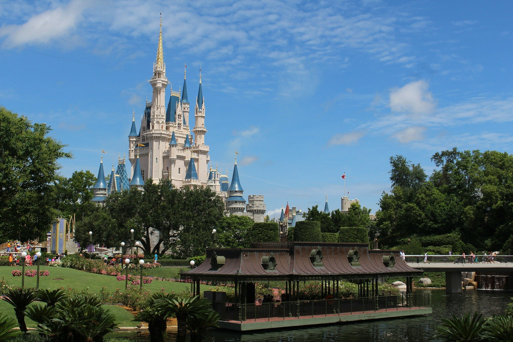

Spring Break: Universal Studios and Disney World
In the spring of 2019, during spring break, my family and I went to Disney World and Universal Studios, both in Orlando, Florida. These are really fun amusement parks to go to, but I would recommend going to one at a time so that you can enjoy each place to the fullest. The ride wait times can be really long, especially for some of the more popular rides.
I would recommend rides like It’s A Small World and Mad Tea Party at Disney World, as these are fairly chill rides without too much waiting. At Universal Studios, the Wizarding World of Harry Potter is fun to spend time at as a fan, especially if you buy a “working” wand. My brother and I had each bought one the last time we went to Universal, and they still worked a couple years later. The “working” wands can be used around the Wizarding World at certain places marked on the included map, and by moving them in certain ways, “magic” can happen by way of moving objects and the like.
Disney World
Universal
Summer Break: California
In the summer of 2019, my family and I went to California. We mostly stayed in San Diego, but we also went to San Francisco. We spent a lot of time at Balboa Park in San Diego, as they had a lot of museums and gardens that could all be accessed with just one pass. There were also a number of good restaurants and other places to eat, such as ice cream stands.
We went to a few beaches, such as Coronado Beach, but we didn’t spend much time there. In San Francisco, we did some of the classic things, such as visiting the Golden Gate Bridge and riding in a cable car. While on this trip, I actually found a new video game that I really liked, so I spent a lot of my spare time on the trip playing it. I would recommend finding something like that for downtime, as traveling can get tiring after a lot of driving.
Travel Information
Summer Break: India
In the summer of 2016, I went to India with my mother and brother. We went mainly to visit relatives, but there were plenty of other places we visited as well. I spent a lot of time with my younger cousins, and we tried different snacks like jelly ice cream.
Some of the attractions that we visited were the Taj Mahal and the Wonderla Amusement Park. The Taj Mahal gets really hot in the summer, so it’s important to bring lots of water and maybe a manual fan to stay cool. The amusement park was pretty fun, as there were lots of cool rides.
Travel Guidelines